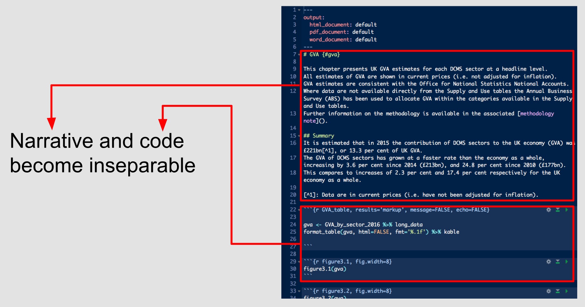

Chapter 13 Producing the publication
R Markdown provides an unified authoring framework for data science, combining your code, its results, and your prose commentary. R Markdown documents are fully reproducible and support dozens of output formats, like PDFs, Word files, slideshows, and more. - Hadley Wikcham, R for Data Science
Everything I have talked about so far is to do with the production of the statistics themselves, not preparation of the final publication, but there are tools that can help with this too. In our project with DCMS we plan to use Rmarkdown (a flavour of markdown) to incorporate the R code into the same document as the text of the publication.
Working in this way means that we can do all of the operations in a single file, so we have no problems with ensuring that our tables or figures are synced with the latest version of the text: everything can be produced in a single file. We can even produce templates with boilerplate text like: ‘this measure increased by X%’, and then automatically populate the X with the correct values when we run the code.
13.1 R Markdown overview
Copied and paraphrased from Hadley Wickham’s R for Data Science:
R Markdown provides an unified authoring framework for analytical reporting, combining your code, its results, and your prose commentary. R Markdown documents are fully reproducible and support dozens of output formats, like PDFs, Word files, slideshows, and more.
R Markdown files as a data product of RAP are designed to be used:
- For communicating to decision makers or users, who want to focus on the conclusions, not the code behind the analysis.
R Markdown integrates a number of R packages and external tools. This means that help is, by-and-large, not available through ?. Instead you can rely on the Help within RStudio:
R Markdown Cheat Sheet: Help > Cheatsheets > R Markdown Cheat Sheet,
R Markdown Reference Guide: Help > Cheatsheets > R Markdown Reference Guide.
Both cheatsheets are also available at http://rstudio.com/cheatsheets.
13.1.1 Prerequisites
You need the rmarkdown package, but you don’t need to explicitly install it or load it, as RStudio automatically does both when needed.
13.2 R Markdown basics
This file itself is an R Markdown file, a plain text file that has the extension .Rmd. Here’s a screenshot of a R Markdown file:

It contains three important types of content:
- An (optional) YAML header surrounded by
---s (lines 1-6). - Chunks of R code surrounded by
```(lines 22-27 and 29-31). - Text mixed with simple text formatting like
# headingand_italics_(lines 7-20).
13.3 Text formatting with Markdown
Prose in .Rmd files is written in Markdown, a lightweight set of conventions for formatting plain text files. Markdown is designed to be easy to read and easy to write. It is also very easy to learn thus we leave that to the reader to learn themselves through practise.
13.4 Code chunks
To run code inside an R Markdown document, you need to insert a chunk. There are three ways to do so:
The keyboard shortcut Cmd/Ctrl + Alt + I
The “Insert” button icon in the editor toolbar.
By manually typing the chunk delimiters
```{r}and```.
Obviously, Hadley Wickham recommends you learn the keyboard shortcut. It will save you a lot of time in the long run!
You can continue to run the code using the keyboard shortcut that by now you know and love: Cmd/Ctrl + Enter. However, chunks get a new keyboard shortcut: Cmd/Ctrl + Shift + Enter, which runs all the code in the chunk (Cmd/Ctrl + Shift + N, runs the next chunk). Think of a chunk like a function. A chunk should be relatively self-contained, and focussed around a single task.
13.4.1 Chunking code in RAP
Ask your users what they might prefer; all the code in one chunk at the start, specifying all the variables needed for the rest of the document, to keep the code “out of the way”, or each code chunk occuring adjacent to the relevant statistic, figure or table generated.
13.4.2 Chunk name
Chunks can be given an optional name: ```{r by-name}. This has three advantages:
You can more easily navigate to specific chunks using the drop-down code navigator in the bottom-left of the script editor:

Graphics produced by the chunks will have useful names that make them easier to use elsewhere.
You can set up networks of cached chunks to avoid re-performing expensive computations on every run.
There is one chunk name that imbues special behaviour: setup. When you’re in a notebook mode, the chunk named setup will be run automatically once, before any other code is run. This can be used to set defaut behaviour for all of your chunks as well as a few other special things.
13.4.3 Chunk options
Chunk output can be customised with options, arguments supplied to chunk header. Knitr provides almost 60 options that you can use to customize your code chunks. Here we’ll cover the most important chunk options that you’ll use frequently. You can see the full list at http://yihui.name/knitr/options/.
The most important set of options controls if your code block is executed and what results are inserted in the finished report:
eval = FALSEprevents code from being evaluated. (And obviously if the code is not run, no results will be generated). This is useful for displaying example code, or for disabling a large block of code without commenting each line.include = FALSEruns the code, but doesn’t show the code or results in the final document. Use this for setup code that you don’t want cluttering your report.echo = FALSEprevents code, but not the results from appearing in the finished file. Use this when writing reports aimed at people who don’t want to see the underlying R code.message = FALSEorwarning = FALSEprevents messages or warnings from appearing in the finished file.results = 'hide'hides printed output;fig.show = 'hide'hides plots.error = TRUEcauses the render to continue even if code returns an error. This is rarely something you’ll want to include in the final version of your report, but can be very useful if you need to debug exactly what is going on inside your.Rmd. It’s also useful if you’re teaching R and want to deliberately include an error. The default,error = FALSEcauses knitting to fail if there is a single error in the document.
The following table summarises which types of output each option supressess:
| Option | Run code | Show code | Output | Plots | Messages | Warnings |
|---|---|---|---|---|---|---|
eval = FALSE |
- | - | - | - | - | |
include = FALSE |
- | - | - | - | - | |
echo = FALSE |
- | |||||
results = "hide" |
- | |||||
fig.show = "hide" |
- | |||||
message = FALSE |
- | |||||
warning = FALSE |
- |
13.4.4 Global options
As you work more with knitr, you will discover that some of the default chunk options don’t fit your needs and you want to change them. You can do this by calling knitr::opts_chunk$set() in a code chunk. For example, when business reports and statistical publications try:
knitr::opts_chunk$set(
echo = FALSE
)That will hide the code by default, so only showing the chunks you deliberately choose to show (with echo = TRUE). You might consider setting message = FALSE and warning = FALSE, but that would make it harder to debug problems because you wouldn’t see any messages in the final document.
13.4.5 Inline code
Often a report might have statistics within a sentence of prose. There is a way to embed R code into prose, with inline code. This can be very useful if you mention properties of your data in the text. You might want to write functions that prettify to create the desired kind of output (i.e. rounding to two digits and a % suffixed).
Inline output is indistinguishable from the surrounding text. Inline expressions do not take knitr options.
13.5 YAML header
You can control many other “whole document” settings by tweaking the parameters of the YAML header. You might wonder what YAML stands for: it’s “yet another markup language”, which is designed for representing hierarchical data in a way that’s easy for humans to read and write. R Markdown uses it to control many details of the output.
13.5.1 Output style
You can output in a variety of file formats and customise the appearance of your output.
13.5.2 Parameters
R Markdown documents can include one or more parameters whose values can be set when you render the report. Parameters are useful when you want to re-render the same report with distinct values for various key inputs. For example, you might be producing sales reports per branch, exam results by student, or demographic summaries by country. To declare one or more parameters, use the params field.
In RStudio, you can click the “Knit with Parameters” option in the Knit dropdown menu to set parameters, render, and preview the report in a single user friendly step. You can customise the dialog by setting other options in the header. See http://rmarkdown.rstudio.com/developer_parameterized_reports.html#parameter_user_interfaces for more details.
13.6 Further Reading
R Markdown is still relatively young, and is still growing rapidly. The best place to stay on top of innovations is the official R Markdown website: http://rmarkdown.rstudio.com and https://rmarkdown.rstudio.com/articles.html.
You can write individual chapters using R markdown, as one file per Chapter.
Alternatively you can write the whole publication using bookdown. For a basic start in bookdown try this blog post (we wrote this book using this to kick things off).